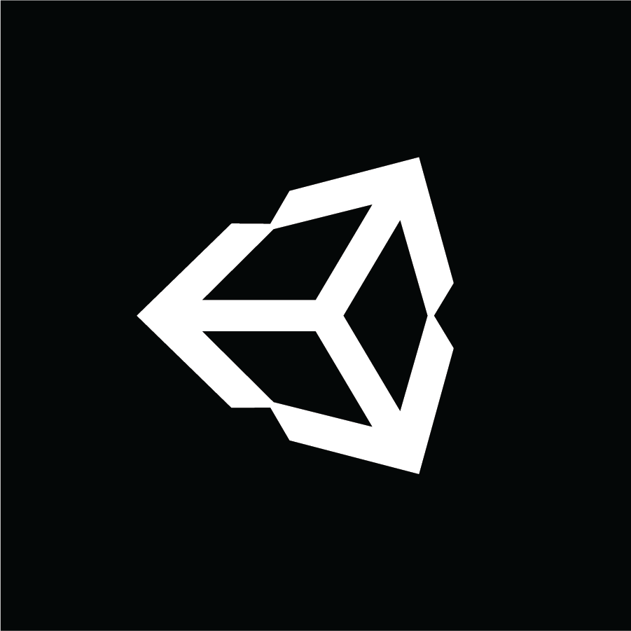
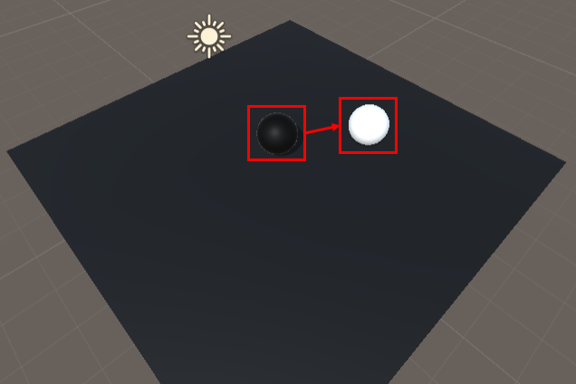
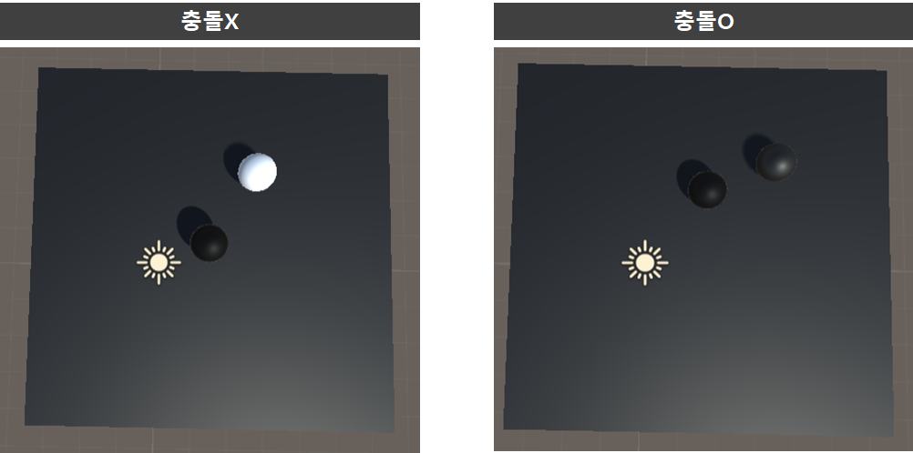
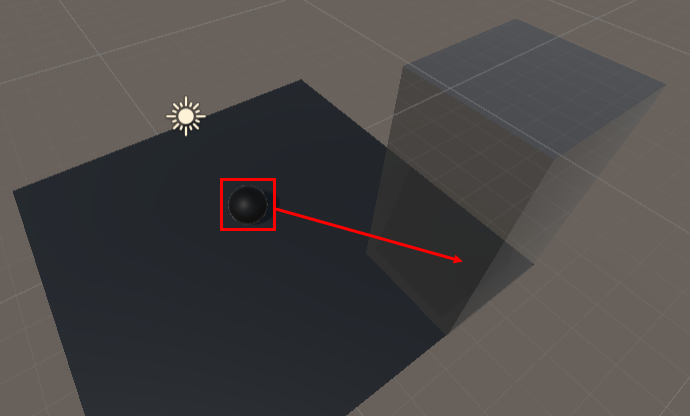
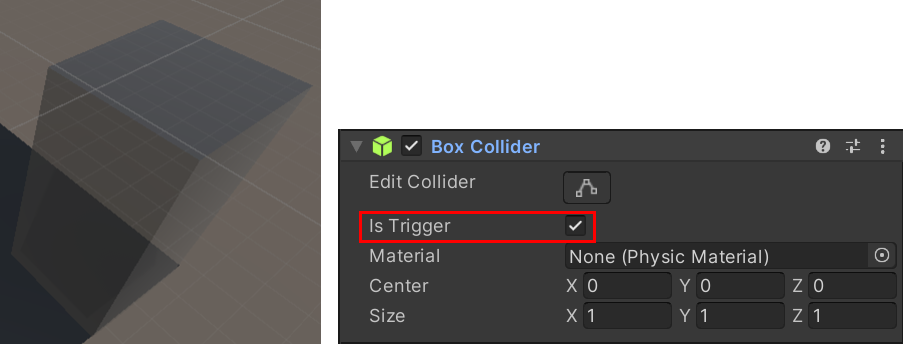
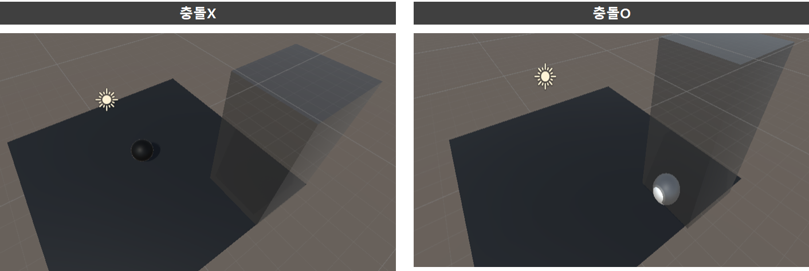

[목차]
#1 충돌 발생조건
#2 Collision - OnCollisionEnter(), OnCollisionStay(), OnCollisionExit()
#3 Trigger - OnTriggerEnter(), OnTriggerStay(), OnTriggerExit()
* 개인적인 공부 내용을 기록하기 위한 용도로 작성된 게시글 이기에, 잘못된 내용이 있을 수 있습니다.
#1 충돌 발생조건
* 충돌이 일어나기 위해서는, 두 오브젝트가 모두 Collider를 갖고 있어야 하며, 둘 중 하나 이상은 RigidBody 컴퍼넌트를 갖고 있어야 합니다.
* 두 개의 오브젝트 중 하나의 오브젝트만 움직인다면, 움직이는 오브젝트가 RigidBody 컴퍼넌트를 가지고 있어야 합니다.
#2 Collision
Collision은 실제로 물리적 충돌을 감지하여 충돌을 처리하는 클래스입니다.
* 따라서 두 오브젝트 모두 RigidBody 컴퍼넌트의 Is Kinematic (체크 하면 외부 물리효과를 무시함.) 항목이 비활성화 되어 있어야만 합니다.
[Collision 관련 함수]
OnCollisionEnter(Collision collision) : 두 객체가 충돌 시 호출되는 함수 입니다.
OnCollisionStay(Collision collision) : 두 객체가 충돌하는 동안 호출되는 함수 입니다.
OnCollisionExit(Collision collision) : 두 객체가 충돌을 끝마치면 호출되는 함수 입니다.
[OnCollisionEnter() 예제]
* 좌측의 검은색 공이 우측의 흰색 공과 충돌 시 흰색 공의 색깔을 검은색으로 변하는 예제 입니다.

검은색 공에 적용된 C# 스크립트 : BallController
- 단순히 Input 함수들을 이용해 WASD 방향으로 이동을 수행하는 스크립트 입니다.
using System.Collections;
using System.Collections.Generic;
using UnityEngine;
public class BallController : MonoBehaviour
{
[SerializeField]
private float _speed = 10.0f;
void Start()
{
//rigid = GetComponent<Rigidbody>();
}
void Update()
{
Move();
}
void Move()
{
if (Input.GetKey(KeyCode.W))
{
transform.Translate(Vector3.forward * _speed * Time.deltaTime);
}
if (Input.GetKey(KeyCode.S))
{
transform.Translate(Vector3.back * _speed * Time.deltaTime);
}
if (Input.GetKey(KeyCode.A))
{
transform.Translate(Vector3.left * _speed * Time.deltaTime);
}
if (Input.GetKey(KeyCode.D))
{
transform.Translate(Vector3.right * _speed * Time.deltaTime);
}
}
}흰색 공에 적용된 C# 스크립트 : CollisionDetected
- OnCollisionEnter() 함수를 이용해 , 충돌을 감지하여 충돌 시 공의 색상을 검은색으로 바꿔주는 기능을 수행합니다.
using System.Collections;
using System.Collections.Generic;
using UnityEngine;
public class CollisionDetected : MonoBehaviour
{
MeshRenderer mesh;
Material mat;
void Start()
{
mesh = GetComponent<MeshRenderer>();
mat = mesh.material;
}
private void OnCollisionEnter(Collision collision)
{
if (collision.gameObject.name == "Sphere")
{
mat.color = new Color(0, 0, 0);
}
}
}
[실행결과]

#3 Trigger
Trigger은 Collision과 달리 Collider 를 이용해 충돌을 감지하는 클래스 입니다. 실제적인 물리적 충돌 연산을 하지 않고, 충돌을 감지 하기에 Is Kinematic 의 활성화 여부는 영향을 받지 않습니다. 따라서, 파라미터도 Collision이 아닌 Collider 입니다. 단, Trigger을 사용하기 위해서는 해당하는 게임 오브젝트의 Collider에 Is Trigger 항목을 활성화 해 주어야 합니다.
* 보통 특정 영역에 오브젝트가 진입했을 시 , 이벤트가 발생하는 상황에서 자주 사용됩니다.
[Trigger 관련 함수]
OnTriggerEnter(Collider other) : 두 객체가 충돌 시 호출되는 함수 입니다.
OnTriggerStay(Collider other) : 두 객체가 충돌하는 동안 호출되는 함수 입니다.
OnTriggerExit(Collider other) : 두 객체가 충돌을 끝마치면 호출되는 함수 입니다.
[OnTriggerStay() 예제]
* 검은색 공이 투명한 큐브 영역에 들어갈 시 공의 색이 하얀색으로 변하는 예제 입니다.

[사전작업]
* Cube 오브젝트의 Collider에서 Is Trigger 항목을 활성화 해 줍니다.

검은색 공에 적용된 C# 스크립트 : BallController (#2와 동일)
TriggerDetected - OnTriggerStay() 함수를 이용해 검은색 공이 박스 영역에 진입 시, 색깔이 흰색으로 바뀌는 역할을 수행합니다.
using System.Collections;
using System.Collections.Generic;
using UnityEngine;
public class TriggerDetected : MonoBehaviour
{
MeshRenderer mesh;
Material mat;
void Start()
{
mesh = GetComponent<MeshRenderer>();
mat = mesh.material;
}
private void OnTriggerStay(Collider other)
{
if(other.gameObject.name == "Cube")
{
mat.color = new Color(1, 1, 1);
}
}
}